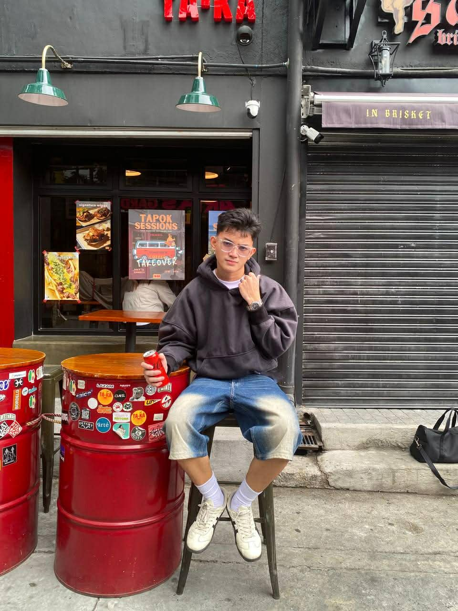
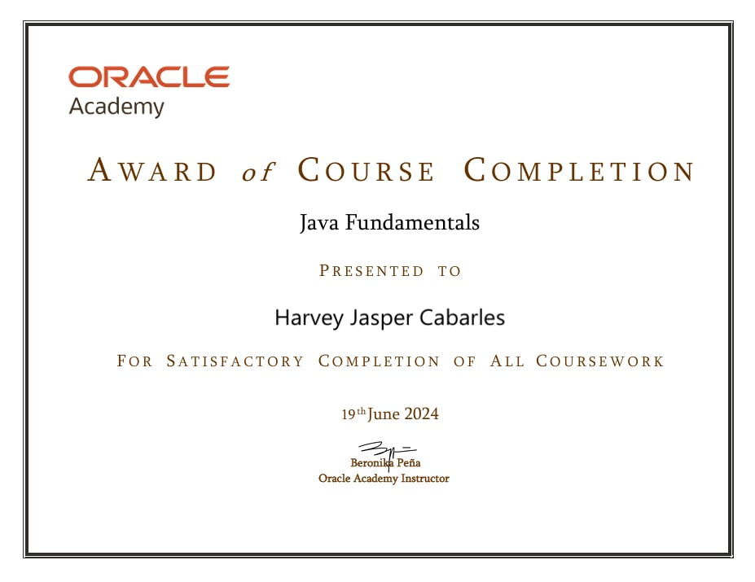

HELLO. I'M
I'm a 4th year Information Technology student interested in technology and web development. I'm currently building my skills through academic projects, seminars, and hands-on learning.

01 — ABOUT
I'm a 4th year Information Technology student who is interested in technology and continuously working on developing my skills. I prefer learning at my own pace and improving through hands-on practice and academic projects.
I chose IT because I'm interested in technology and want to understand how websites, systems, and different technologies work. While I don't have professional experience yet, I'm willing to learn, adapt, and gain practical experience in a real work environment.
As I prepare for my OJT, I am particularly interested in IT support, web development, and cybersecurity. My goal is to learn from professionals, contribute where I can, and continue building my technical and professional skills.
STUDENT PROFILE
02 — SKILLS
Basic technical skills I have developed through my studies, academic projects, and self-learning.
AREAS OF INTEREST
03 — PROJECTS
Academic projects that allowed me to apply what I have learned and develop practical IT solutions.
A web-based equipment lending system designed for Barangay Alabang residents.
A Filipino Sign Language recognition and RFID-based student attendance and safety monitoring system.
04 — JOURNEY
Currently completing my Information Technology degree, working on capstone projects and preparing for OJT.
Developed foundational knowledge in programming, web development, and other areas of Information Technology through academic activities and hands-on practice.
Participated in seminars and training opportunities to expand my knowledge and gain additional learning experiences beyond the classroom.
05 — CREDENTIALS
Certifications, training, and seminars that have contributed to my technical knowledge and professional development.
Credential / Training
Programming Credential
Credential / Training
Credential / Training

06 — CONTACT
I'm currently preparing for my OJT and looking forward to opportunities where I can learn, contribute, and grow.
{kind=link}